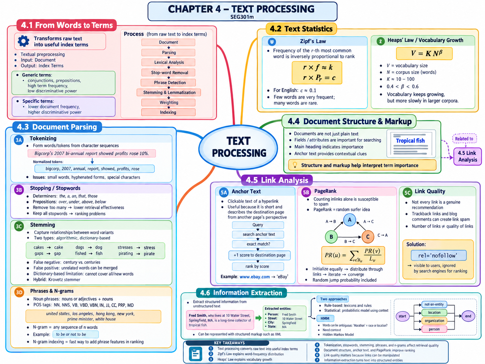

Tài liệu gốc: Slide bài giảng SEG301m Chương 4, "Processing Text" (29 slide)
Cách đọc: Cùng một câu văn nhưng cách ngắt từ, các từ được giữ lại, cùng cấu trúc và liên kết được khai thác sẽ quyết định trực tiếp tới kết quả tìm kiếm. Chương này giúp bạn nắm bắt từng bước xử lý để chuyển đổi văn bản thô thành các "từ chỉ mục" có thể tìm kiếm được.
Mục tiêu của chương
Sau khi học xong chương này, bạn có thể giải thích các nội dung sau:
- Trình bày luồng xử lý từ văn bản thô qua phân tích cú pháp, phân tích từ vựng và gán trọng số để tạo thành từ chỉ mục.
- Giải thích định luật Zipf và định luật Heaps mô tả quy luật phân bố tần số từ và tốc độ tăng trưởng vốn từ vựng như thế nào.
- Phân biệt rõ tách token (tokenization), loại bỏ từ dừng (stopping), rút gọn gốc từ (stemming), cụm từ và n-gram.
- Nêu rõ lý do khai thác cấu trúc tài liệu, văn bản neo (anchor text), PageRank và chất lượng liên kết trong tìm kiếm.
- Giải thích các nguyên lý trích xuất thông tin dựa trên luật và dựa trên thống kê, cùng mô hình Hidden Markov Model (HMM).
SLIDE NGUỒN 1-3

Kiến thức cần chuẩn bị
- Tài liệu (Document): Trang web hoặc tệp tin là đối tượng tìm kiếm.
- Token: Đơn vị chuỗi ký tự thu được sau khi phân tách văn bản.
- Từ chỉ mục (Index term): Từ ngữ được chọn lựa, chuẩn hóa và xử lý để đưa vào chỉ mục phục vụ xếp hạng.
- Tần suất từ (Term frequency): Số lần xuất hiện của một từ trong tài liệu hoặc trong toàn bộ sưu tập.
- Liên kết và văn bản neo: Tham chiếu từ trang này sang trang khác; phần chữ hiển thị của liên kết gọi là văn bản neo (anchor text).
4.1 Từ từ ngữ đến từ chỉ mục
SLIDE NGUỒN 4
Slide 4 mô tả quy trình tiền xử lý tiêu chuẩn từ toàn văn tài liệu đến từ chỉ mục:
- Phân tích cú pháp (Parsing): Đọc và nhận diện cấu trúc phân đoạn của tài liệu.
- Phân tích từ vựng (Lexical analysis): Phân tích chuỗi ký tự thành các từ và ký hiệu độc lập.
- Loại bỏ từ dừng (Stop-word removal): Lọc bỏ các từ quá phổ biến mang ít giá trị phân biệt khi cần.
- Phát hiện cụm từ (Phrase detection): Nhận diện các cụm gồm nhiều từ đi liền nhau.
- Rút gọn gốc từ và Lemmatization: Đưa các biến thể hình thái về cùng dạng gốc.
- Gán trọng số (Weighting): Tính toán mức độ quan trọng của từ đối với việc xếp hạng.
- Lập chỉ mục (Indexing): Lưu trữ vào cấu trúc chỉ mục đảo.
Không phải tài liệu nào cũng bắt buộc đi qua toàn bộ các bước. Sơ đồ cho thấy hệ thống có thể linh hoạt chuyển thẳng từ toàn văn hoặc từ các khâu trung gian sang chỉ mục tùy thuộc vào yêu cầu của từng dịch vụ tìm kiếm.
Từ phổ biến và Từ đặc trưng
| Phân loại | Tính chất | Xu hướng trong tìm kiếm |
|---|---|---|
| Từ phổ biến (General words) | Liên từ, giới từ, từ nối; xuất hiện với tần số rất cao | Khả năng phân biệt chủ đề giữa các tài liệu rất yếu |
| Từ đặc trưng (Content words) | Tập trung dày đặc trong các chủ đề chuyên biệt | Khả năng nhận diện và phân biệt tài liệu rất mạnh |
Các từ phổ biến thường có tần suất từ trong tài liệu (term frequency) rất cao, trong khi các từ đặc trưng thường có tần suất tài liệu (document frequency) thấp trên toàn kho dữ liệu.
4.2 Thống kê văn bản
SLIDE NGUỒN 5-7
Định luật Zipf
Slide 5 mô tả mối quan hệ gần như tỉ lệ nghịch giữa thứ bậc tần số r và tần số xuất hiện f:
r: thứ bậc tần số của từ (từ xuất hiện nhiều nhất cór = 1).f: tần số xuất hiện thực tế của từ đó.k: hằng số phụ thuộc vào dung lượng bộ sưu tập tài liệu.P_r: xác suất xuất hiện của từ đứng ở vị trí thứ bậcr.c: hằng số trong biểu diễn xác suất (trong tiếng Anh thường xấp xỉ0.1).
Ví dụ tính toán: Nếu từ đứng đầu (r = 1) xuất hiện 100.000 lần, ta có r · f ≈ 100.000. Khi đó, từ đứng thứ 10 (r = 10) dự kiến xuất hiện khoảng 100.000 / 10 = 10.000 lần, và từ đứng thứ 100 (r = 100) xuất hiện khoảng 100.000 / 100 = 1.000 lần. Dù dữ liệu thực tế không khớp hoàn toàn từng con số, công thức này phản ánh rõ nét xu hướng phân bố: "một số ít từ xuất hiện rất nhiều, còn phần lớn các từ xuất hiện rất ít".
Nếu đầu vào là thứ bậc r = 10 và hằng số k = 100.000, thì tần suất ước lượng ở đầu ra là f ≈ k / r = 10.000. Đây không phải là công thức nhằm dự đoán chính xác tuyệt đối từng từ đơn lẻ, mà là quy luật thực nghiệm mô tả xu hướng phân bố từ ngữ của toàn bộ kho ngữ liệu.
Xem đáp án gợi ý
Tần số ước tính là f ≈ 100.000 / 50 = 2.000 lần. Khi thứ bậc tăng gấp 5 lần (từ 10 lên 50) thì tần số xuất hiện giảm đi 5 lần (từ 10.000 xuống 2.000).
Bảng thống kê bộ sưu tập AP89
SLIDE NGUỒN 6
Trong bộ sưu tập báo chí AP89 ở Slide 6, các từ đứng đầu danh sách là the, of, to, a, and. Ngược lại, nhóm từ có tần số xuất hiện cực thấp gồm các từ như assistant, sewers, toothbrush, hazmat.
Từ bảng số liệu này, ta rút ra ba kết luận quan trọng:
- Các từ có tần số rất cao tuy quan trọng về mặt ngữ pháp nhưng khó phân biệt được chủ đề tài liệu.
- Các từ có tần số rất thấp mang tính đặc trưng cao, nhưng có thể chứa cả lỗi chính tả hoặc tên riêng chỉ xuất hiện một lần.
- Không thể chỉ dựa đơn thuần vào tần số để xóa từ, mà phải kết hợp với mục tiêu tìm kiếm thực tế.
Định luật Heaps
SLIDE NGUỒN 7
Trên slide tác giả ghi là "Heap's Law", nhưng thông thường được gọi là định luật Heaps (Heaps' law). Khi tổng số từ của bộ sưu tập tài liệu tăng lên, số lượng từ phân biệt (vốn từ vựng) cũng tăng theo:
V: kích thước vốn từ vựng (số lượng từ phân biệt).N: tổng số lượng từ (token) trong toàn bộ tài liệu.K: hằng số thực nghiệm, thường nằm trong khoảng 10 đến 100.β: số mũ nằm trong khoảng0 < β < 1(slide nêu thường từ 0.4 đến 0.6).
Ví dụ tính toán: Với K = 50, β = 0.5 và N = 1.000.000 token:
V = 50 × √(1.000.000) = 50 × 1.000 = 50.000 từ phân biệt.
Nếu tăng tổng số từ N lên gấp 4 lần (4 triệu token) thì V chỉ tăng lên gấp 2 lần (50 × 2.000 = 100.000 từ).
Điều kiện β < 1 chính là yếu tố làm tốc độ tăng trưởng chậm lại theo hàm mũ con. Nếu β = 1 thì tăng 4 lần dữ liệu sẽ làm từ vựng tăng 4 lần; còn khi β = 0.5, từ vựng chỉ tăng theo căn bậc hai.
4.3 Tách token (Tokenizing)
SLIDE NGUỒN 8-9
Tách token (tokenizing) là quá trình phân chia chuỗi ký tự văn bản thành các đơn vị từ độc lập.
Xét câu văn mẫu:
Bigcorp's 2007 annual report showed profits rose 10%.
Ngay cả khi tách đơn giản theo khoảng trắng, kỹ sư vẫn phải đưa ra hàng loạt quyết định xử lý:
Bigcorp'sđược coi là một từ hay tách thànhBigcorpvà dấu sở hữu cách's?- Các số như
2007hay ký hiệu10%có được giữ lại làm từ tìm kiếm không? - Cụm có gạch nối
annual-reportvà hai từ rờiannual reportcó được coi là tương đương không? - Các từ quá ngắn (1-2 ký tự) có bị loại bỏ không?
- Địa chỉ email, liên kết URL, ký hiệu toán học và emoji được xử lý như thế nào?
Trong tiếng Việt, do chữ viết không dùng khoảng trắng để phân biệt từ đơn hay từ ghép, hệ thống cần sử dụng các bộ tách từ chuyên biệt (như PyVi, VnCoreNLP) để phân đoạn: công cụ_tìm kiếm / của / sinh viên. Quy tắc tách token của khâu lập chỉ mục và khâu truy vấn bắt buộc phải giống hệt nhau thì mới so khớp chính xác được.
4.4 Loại bỏ từ dừng và Rút gọn gốc từ
SLIDE NGUỒN 10-13
Loại bỏ từ dừng (Stopword removal)
Slide đưa ra các ví dụ trong tiếng Anh như the, a, an, that, those hoặc các giới từ over, under, above, below. Việc loại bỏ các từ dừng (stopword) này giúp giảm dung lượng chỉ mục và tăng tốc độ xử lý.
Tuy nhiên, việc loại bỏ quá đà sẽ làm hỏng ngữ nghĩa của truy vấn. Ví dụ với các tên riêng hoặc thành ngữ như to be or not to be, The Who, under pressure, các từ dừng chính là thành phần cốt lõi tạo nên ý nghĩa. Ngược lại, nếu không lọc bớt, các từ xuất hiện quá nhiều sẽ chi phối sai lệch kết quả tính điểm xếp hạng.
Rút gọn gốc từ (Stemming)
Rút gọn gốc từ (stemming) đưa các biến thể hình thái của một từ về một dạng gốc chung (word stem):
cakes → cakedogs → dogstresses → stressfished → fishpirating → pirate
Cần lưu ý hai dạng sai sót:
- Âm tính giả (false negative): Lỗi bỏ sót các từ đáng lẽ phải gom về cùng gốc. Ví dụ: quy tắc cắt đuôi đơn giản không thể nhận diện
centuryvàcenturieslà cùng một gốc. - Dương tính giả (false positive): Lỗi gom nhầm các từ mang nghĩa khác nhau về cùng một gốc. Slide cảnh báo nguy cơ nhầm lẫn giữa đại từ
Ivà động từis.
Phân biệt giữa Rút gọn gốc từ (stemming) và Chuẩn hóa từ điển (lemmatization):
| Từ đầu vào | Kết quả của Stemming | Kết quả của Lemmatization |
|---|---|---|
studies |
studi (cắt đuôi cơ học) |
study (dạng từ điển chuẩn) |
am, are, is |
Giữ nguyên riêng rẽ | be (động từ nguyên thể) |
better |
Có thể giữ nguyên better |
good (tính từ gốc dựa trên từ điển) |
Stemmer chủ yếu dùng các quy tắc cắt bỏ tiền tố/hậu tố bằng chuỗi ký tự nên gốc từ sinh ra không nhất thiết phải là một từ có nghĩa trong từ điển (như studi). Ngược lại, lemmatizer phân tích từ loại (part-of-speech) và tra cứu từ điển để trả về dạng từ nguyên chính xác, đòi hỏi chi phí tính toán và tri thức ngôn ngữ lớn hơn nhiều.
Quy tắc của thuật toán Stemmer theo luật (Porter Stemmer)
SLIDE NGUỒN 12
Các quy tắc xử lý hậu tố tiếng Anh tiêu biểu trên slide:
| Quy tắc | Ví dụ áp dụng |
|---|---|
Chuyển đuôi sses thành ss |
stresses → stress |
Xóa đuôi s nếu thỏa mãn điều kiện |
gaps → gap, nhưng giữ nguyên gas → gas |
Chuyển ied/ies thành i hoặc ie |
ties → tie, cries → cri |
Giữ nguyên đuôi us/ss |
stress → stress |
Chuyển eed/eedly thành ee nếu thỏa điều kiện |
agreed → agree, feed → feed |
Xóa đuôi ed/edly/ing/ingly nếu thỏa điều kiện |
fished → fish, pirating → pirate |
Thuật ngữ "thỏa mãn điều kiện" nhằm bảo vệ các từ ngắn không bị cắt cụt vô lý: phần gốc phía trước hậu tố phải có độ dài tối thiểu và chứa nguyên âm. Ví dụ quy tắc xóa đuôi s chỉ áp dụng khi trước s có nguyên âm và nguyên âm đó không nằm sát ngay trước s, nhờ đó gaps được đổi thành gap nhưng gas không bị biến dạng.
Ý niệm "sau vị trí ký tự không phải nguyên âm đầu tiên xuất hiện sau một nguyên âm" trong quy tắc eed là cách mà thuật toán họ Porter xác định vùng an toàn để xử lý hậu tố. Ở đây, thay vì cố gắng học thuộc lòng toàn bộ quy tắc, điểm mấu chốt bạn cần nắm vững là: dù phần đuôi giống nhau, thuật toán luôn kiểm tra hình thái của phần thân từ trước khi quyết định chuyển đổi.
Các quy tắc này áp dụng đặc thù cho cấu trúc hình thái học của tiếng Anh. Tiếng Việt là ngôn ngữ đơn lập, không biến đổi hình thái từ bằng cách thêm tiếp vị ngữ (hậu tố), do đó không áp dụng các quy tắc rút gọn đuôi như vậy.
Stemmer dựa trên từ điển và Krovetz Stemmer
SLIDE NGUỒN 13
Stemmer dựa trên từ điển lưu trữ sẵn các bảng ánh xạ từ vựng đầy đủ. Phương pháp này rất chuẩn xác nhưng không thể tự động xử lý từ mới, từ lóng và làm phình to dung lượng từ điển.
Krovetz stemmer là giải pháp lai kết hợp giữa thuật toán cắt đuôi và tra cứu từ điển, vừa đảm bảo tốc độ vừa duy trì độ chính xác cao.
4.5 Cụm từ và N-gram
SLIDE NGUỒN 14-16
Cụm danh từ dựa trên từ loại (Part-of-Speech)
Cụm danh từ (noun phrase) được định nghĩa là chuỗi gồm các danh từ liên tiếp hoặc tính từ bổ nghĩa cho danh từ. Slide 14 liệt kê các nhãn từ loại của bộ gán nhãn POS:
| Nhãn POS | Ý nghĩa | Ví dụ |
|---|---|---|
| NN / NNS | Danh từ số ít / Danh từ số nhiều | report / reports |
| VB / VBD / VBN | Động từ nguyên mẫu / Quá khứ / Quá khứ phân từ | use / used / written |
| IN | Giới từ | in, of |
| JJ | Tính từ | tropical |
| CC | Liên từ kết hợp | and, or |
| PRP | Đại từ nhân xưng | it, they |
| MD | Động từ khuyết thiếu | can, will |
Bằng cách nhận diện các cụm danh từ như market share hay tropical fish, hệ thống nắm bắt được trọn vẹn ngữ nghĩa hơn là việc phân tách các từ đơn lẻ.
Cụm từ phổ biến trong ngữ liệu TREC
SLIDE NGUỒN 15
Slide 15 so sánh các cụm danh từ tần số cao giữa dữ liệu tin tức TREC và dữ liệu bằng sáng chế, cho thấy sự khác biệt rõ rệt về từ vựng:
| Cụm từ phổ biến trong TREC | Cụm từ phổ biến trong Bằng sáng chế |
|---|---|
united states |
present invention |
article type |
u.s. part |
los angeles |
preferred embodiment |
hong kong |
carbon atoms |
new york |
room temperature |
Mỗi miền dữ liệu có những cụm từ đặc trưng riêng, do đó hệ thống cần thống kê trực tiếp trên kho dữ liệu thực tế thay vì chỉ dựa vào từ điển tổng quát.
Kỹ thuật N-gram
N-gram là chuỗi gồm n từ (hoặc ký tự) xuất hiện liên tiếp nhau trong văn bản.
Chuỗi bi-gram (2-gram) của câu to be or not to be:
to be | be or | or not | not to | to be
Đưa n-gram vào chỉ mục cho phép hệ thống tìm kiếm cụm từ nhanh chóng mà không cần phân tích cú pháp phức tạp. Tuy nhiên, khi n tăng lên, số lượng n-gram phân biệt sẽ bùng nổ, làm tăng mạnh kích thước chỉ mục.
4.6 Cấu trúc tài liệu và đánh dấu
SLIDE NGUỒN 17
Các trường dữ liệu trong cơ sở dữ liệu và cấu trúc thẻ trong trang Web mang ý nghĩa rất lớn cho việc tìm kiếm. Trong trang web ví dụ Tropical fish, từ tropical fish xuất hiện ở tiêu đề chính (heading) sẽ mang giá trị manh mối mạnh hơn nhiều so với việc chỉ xuất hiện vu vơ ở phần chân trang.
Hệ thống tìm kiếm gán các trọng số khác nhau cho từng trường (field):
- tiêu đề bài viết (title)
- tiêu đề mục chính (main heading)
- phần thân bài (body)
- tác giả (author)
- văn bản neo (anchor text)
- ngày xuất bản (publication date)
4.7 Văn bản neo (Anchor text)
SLIDE NGUỒN 18-19
Các từ ngữ hiển thị chứa liên kết bấm được gọi là văn bản neo (anchor text), thường được phân biệt bằng gạch chân hoặc màu sắc nổi bật.
Văn bản neo hỗ trợ xếp hạng rất tốt vì hai lý do cốt lõi:
- Thường rất ngắn gọn (chỉ 2-3 từ) và tóm tắt đúng trọng tâm nội dung của trang đích.
- Được viết dưới góc nhìn khách quan của người khác (bên thứ ba) khi giới thiệu về trang, bổ sung từ vựng tự nhiên cho trang đích.
Phương pháp xếp hạng đơn giản ở Slide 19:
- Quét toàn bộ các liên kết trong bộ sưu tập tài liệu.
- Nếu văn bản neo của một liên kết khớp chính xác với câu truy vấn, cộng 1 điểm cho trang đích.
- Sắp xếp các trang đích theo thứ tự điểm số giảm dần.
Ví dụ, nếu hàng triệu trang web cùng đặt liên kết chứa chữ eBay trỏ về địa chỉ www.ebay.com, trang web đó sẽ tự động đạt điểm số cực cao cho truy vấn eBay.
Hạn chế: So khớp chính xác không xử lý được các từ đồng nghĩa hoặc lỗi chính tả, đồng thời rất dễ bị các thủ thuật thao túng liên kết (link spam) tấn công.
4.8 Thuật toán PageRank
SLIDE NGUỒN 20-22
Mô hình người lướt web ngẫu nhiên (Random Surfer)
Nếu chỉ đếm số lượng liên kết trỏ đến (inlink), kẻ xấu có thể tạo ra hàng nghìn trang rác rồi đặt liên kết trỏ về trang của mình để thao túng thứ hạng. Thuật toán PageRank khắc phục điều này bằng cách xem xét mức độ uy tín của trang đặt liên kết và số lượng liên kết đi ra từ trang đó.
Hình ảnh ẩn dụ đồng tiền này giúp ta dễ hình dung cơ chế phân phối điểm số. Trong thực tế, PageRank không phải là quá trình con người tự đặt đồng tiền lên các trang, mà là phép tính lặp để tìm "xác suất người dùng đang dừng chân tại một trang cụ thể khi liên tục di chuyển ngẫu nhiên qua các liên kết".
Mô hình người lướt web ngẫu nhiên (random surfer) giả định một người dùng lướt mạng bằng cách bấm ngẫu nhiên vào các liên kết trên trang. Tuy nhiên, nếu chỉ đi theo liên kết, người đó có thể bị kẹt vĩnh viễn trong một nhóm các trang liên kết vòng tròn khép kín (vòng lặp vô tận). Vì vậy, mô hình bổ sung xác suất người dùng đột ngột chán nản và gõ một địa chỉ URL bất kỳ trong toàn bộ Web để nhảy tới trang mới.
Ví dụ đồ thị 3 trang
SLIDE NGUỒN 21
- Trang A đặt liên kết trỏ tới B và C.
- Trang B đặt liên kết trỏ tới C.
- Trang C đặt liên kết trỏ tới A.
Điểm PageRank của C bằng một nửa điểm của A (vì A chia đều cho B và C) cộng với toàn bộ điểm của B (vì B chỉ trỏ duy nhất tới C):
Công thức tổng quát:
B_u: tập hợp các trang có liên kết trỏ tới trangu.L_v: số lượng liên kết đi ra (outlink) của trangv.
Tính toán vòng lặp đầu tiên: Khởi tạo điểm ban đầu của A, B, C đều bằng 1/3:
PR(A) = PR(C) / 1 = 1/3PR(B) = PR(A) / 2 = 1/6PR(C) = PR(A) / 2 + PR(B) / 1 = 1/6 + 1/3 = 1/2
| Trang | Giá trị vòng trước | Giá trị sau vòng 1 |
|---|---|---|
| A | 1/3 |
1/3 |
| B | 1/3 |
1/6 |
| C | 1/3 |
1/2 |
Lưu ý rằng giá trị mới của cả 3 trang đều được tính dựa trên giá trị của vòng trước (1/3), sau đó được cập nhật đồng thời (synchronous update).
Nếu chỉ áp dụng công thức đơn giản này, giá trị điểm số có thể dao động hoặc không hội tụ. Do đó, thuật toán lặp thực tế bổ sung thêm xác suất người dùng không đi theo liên kết mà nhảy ngẫu nhiên đến một trang bất kỳ.
Thuật toán lặp có bước nhảy ngẫu nhiên (Slide 22)
Gọi số lượng trang là |P|, xác suất nhảy ngẫu nhiên là λ:
- Gán giá trị ban đầu cho mỗi trang là
1 / |P|. - Khởi tạo mảng giá trị mới với điểm cơ sở từ bước nhảy ngẫu nhiên: mỗi trang nhận
λ / |P|. - Nếu trang
pcó tập liên kết raQ, chia đều phần điểm theo liên kết(1 - λ)I_p / |Q|cho các trang đích. - Nếu trang
pkhông có liên kết ra nào (dangling page), chia đều(1 - λ)I_p / |P|cho tất cả các trang trong toàn mạng. - Lặp lại cho đến khi vector điểm số hội tụ.
I_p: xác suất người dùng đang ở trangpở vòng trước.R_q: xác suất tích lũy mới cho trangqở vòng này.λ: xác suất người dùng không bấm liên kết mà nhảy ngẫu nhiên tới một trang bất kỳ.1 - λ: xác suất người dùng bấm vào một liên kết trên trang hiện tại.
Trong một số tài liệu khác, người ta gọi hệ số suy giảm (damping factor) là d = 0.85, tương ứng với 1 - λ = 0.85 (tức λ = 0.15).
Bổ sung (tính toán chi tiết để hiểu Slide 22): Với λ = 0.15, khởi tạo mỗi trang nhận 1/3, điểm ngẫu nhiên cơ sở là λ / 3 = 0.05:
| Trang | Điểm vòng trước | Điểm ngẫu nhiên | Điểm nhận từ liên kết | Điểm vòng mới |
|---|---|---|---|---|
| A | 1/3 |
0.05 | Nhận từ C: 0.85 × (1/3) = 0.2833 |
0.3333 |
| B | 1/3 |
0.05 | Nhận từ A: 0.85 × (1/3) / 2 = 0.1417 |
0.1917 |
| C | 1/3 |
0.05 | Nhận từ A (0.1417) + nhận từ B (0.2833) |
0.4750 |
Tổng xác suất mới: 0.3333 + 0.1917 + 0.4750 = 1.0000. Tổng xác suất vẫn bảo toàn bằng 1 ngay cả với giá trị chính xác trước khi làm tròn. Tại đây cũng vậy, tất cả các phép tính ở vòng này đều dùng giá trị của vòng trước, sau đó đồng thời cập nhật I ← R.
Trang không có liên kết ra (dangling page) giống như ngõ cụt; việc phân phối đều điểm của nó ra toàn mạng giúp bảo toàn tổng xác suất không bị tiêu biến.
Trạng thái hội tụ (convergence) đạt được khi độ biến thiên điểm số giữa hai vòng lặp liên tiếp nhỏ hơn một ngưỡng sai số rất nhỏ ấn định trước.
Xem đáp án gợi ý
Vì trang A có 2 liên kết đi ra (trỏ tới B và C). Lượng điểm truyền qua liên kết 0.85 × (1/3) được chia đều cho cả 2 liên kết, do đó lượng điểm B nhận được từ A là 0.85 × (1/3) / 2 = 0.1417.
4.9 Chất lượng liên kết
SLIDE NGUỒN 23-24
Slide 23 minh họa trường hợp blog A trích dẫn bài viết của blog B, sau đó blog B tự động tạo liên kết trackback trỏ ngược lại A. Trên đồ thị, đây là liên kết hai chiều, khiến thuật toán khó phân biệt ai mới thực sự là nguồn phát thông tin gốc.
Ngoài ra, mục bình luận trên các trang web thường bị kẻ xấu lợi dụng để chèn liên kết rác nhằm thao túng thứ hạng tìm kiếm (link spam).
Slide 24 giới thiệu thuộc tính rel="nofollow" được thêm vào thẻ liên kết:
<a rel="nofollow" href="https://www.page.com">web page</a>
Thuộc tính này báo cho công cụ tìm kiếm biết rằng chủ sở hữu trang web không bảo chứng cho liên kết này, giúp ngăn chặn hành vi spam liên kết thao túng xếp hạng.
4.10 Trích xuất thông tin và mô hình HMM
SLIDE NGUỒN 25-27
Rút trích cấu trúc từ văn bản tự nhiên
Trích xuất thông tin (information extraction) tự động rút ra các thực thể như tên người, địa chỉ, tổ chức từ các câu văn tự nhiên và lưu trữ dưới dạng có cấu trúc.
Ví dụ ở Slide 25 biến câu văn:
Fred Smith, who lives at 10 Water Street, Springfield, MA, is a long-time collector of tropical fish.
thành cấu trúc XML rõ ràng:
<PersonName><GivenName>Fred</GivenName><Sn>Smith</Sn></PersonName>
<address><Street>10 Water Street</Street><City>Springfield</City><State>MA</State></address>
Phương pháp dựa trên luật và dựa trên thống kê
SLIDE NGUỒN 26
- Dựa trên luật (Rule-based): Sử dụng từ điển tên riêng, địa danh kết hợp với các mẫu biểu thức chính quy ngữ pháp xung quanh.
- Dựa trên thống kê (Statistical-based): Sử dụng mô hình xác suất học từ ngữ cảnh. Slide lấy ví dụ mô hình Hidden Markov Model (HMM).
Từ điển nhận diện rất tốt các tên đã biết nhưng bó tay trước tên mới; mô hình thống kê tuy cần dữ liệu huấn luyện nhưng có khả năng suy luận ngữ cảnh rất linh hoạt.
Mô hình Hidden Markov Model (HMM)
SLIDE NGUỒN 27
Từ Marathon có thể là cuộc thi chạy bộ hoặc tên địa danh Hy Lạp, không thể chỉ nhìn mặt chữ để kết luận. Mô hình HMM giả định đằng sau chuỗi từ quan sát được tồn tại một chuỗi các trạng thái ẩn (hidden state) như Tên người, Địa danh, Tổ chức, Từ thông thường.
| Vị trí | 1 | 2 | 3 |
|---|---|---|---|
| Từ quan sát | Apple |
opened |
stores |
| Trạng thái ẩn | Tổ chức | Từ thông thường | Từ thông thường |
Người dùng chỉ nhìn thấy chuỗi chữ Apple opened stores. Nhãn Tổ chức không được in sẵn trên mặt chữ mà là thông tin ẩn cần suy luận.
Trên sơ đồ trạng thái ở slide, quá trình bắt đầu từ trạng thái start, chuyển qua các trạng thái ẩn dọc theo chuỗi từ, và cuối cùng kết thúc ở trạng thái end. HMM sử dụng hai loại xác suất cốt lõi:
- Xác suất chuyển trạng thái (transition probability): Xác suất chuyển từ trạng thái ẩn này sang trạng thái ẩn tiếp theo (ví dụ xác suất sau
Tổ chứclàTừ thông thường). - Xác suất phát xạ (emission probability): Xác suất một trạng thái ẩn phát sinh ra một từ quan sát cụ thể (ví dụ xác suất trạng thái
Tổ chứcsinh ra chữApple).
Bổ sung (ví dụ giả định để làm rõ cơ chế tính toán): Các con số dưới đây được giả định nhằm mục đích giải thích cách tính, không phải là giá trị học từ dữ liệu thực tế hay lấy nguyên văn từ slide.
| Xác suất giả định | Giá trị |
|---|---|
| `P(Tổ chức | start)` |
| `P(Từ thông thường | start)` |
| `P(Apple | Tổ chức)` |
| `P(Apple | Từ thông thường)` |
| `P(Từ thông thường | Tổ chức)` |
| `P(Từ thông thường | Từ thông thường)` |
| `P(opened | Từ thông thường)` |
| `P(stores | Từ thông thường)` |
- Xác suất chuỗi coi
ApplelàTổ chức:0.30 × 0.40 × 0.70 × 0.10 × 0.80 × 0.05 = 0.000336. - Xác suất chuỗi coi
ApplelàTừ thông thường:0.70 × 0.01 × 0.80 × 0.10 × 0.80 × 0.05 = 0.0000224.
Trường hợp coi Apple là tổ chức có xác suất cao gấp 15 lần, do đó hệ thống chọn nhãn Tổ chức.
Giả định Markov bậc 1 cơ bản quy định trạng thái ẩn tiếp theo chỉ phụ thuộc vào trạng thái ẩn ngay trước nó, chứ không phụ thuộc vào toàn bộ lịch sử trạng thái trong quá khứ. Ngoài ra, mỗi từ quan sát được giả định chỉ phát sinh từ trạng thái ẩn tại thời điểm hiện tại. Do đó, HMM không thể tự do khai thác ngữ cảnh một cách vô hạn; tầm ảnh hưởng của ngữ cảnh xa chỉ được truyền gián tiếp thông qua chuỗi trạng thái.
Hạn chế: Mô hình HMM trên slide là mô hình cơ bản. Trong thực tế, nó có thể gặp khó khăn khi cần biểu diễn ngữ cảnh dài hoặc các mối phụ thuộc phức tạp trong ngôn ngữ tự nhiên.
Bài tập cuối chương
SLIDE NGUỒN 28
Thu thập một số trang từ Wikipedia và thực hiện tách token cho bộ sưu tập. Yêu cầu bài tập gốc: giữ lại các token chỉ gồm các chữ cái, bỏ qua các thẻ đánh dấu và token chứa ký tự phi ASCII.
- Tệp HTML gốc tải về.
- Văn bản sau khi loại bỏ thẻ HTML.
- Chuỗi token sau khi tách từ.
- Danh sách token hoàn thiện chỉ chứa chữ cái.
- Thống kê 20 từ xuất hiện nhiều nhất và danh sách các từ bị loại bỏ.
Tổng kết
SLIDE NGUỒN 29 (và toàn bộ slide 1-28)
- Tài liệu văn bản trải qua phân tích cú pháp, phân tích từ vựng, phát hiện cụm từ, chuẩn hóa hình thái và gán trọng số để trở thành từ chỉ mục.
- Định luật Zipf mô tả sự phân bố mất cân bằng của tần số từ; định luật Heaps mô tả tốc độ tăng trưởng vốn từ vựng theo quy mô ngữ liệu.
- Việc lựa chọn bộ tách token, danh sách stopword, thuật toán stemmer, cụm từ và n-gram ảnh hưởng trực tiếp tới chất lượng kết quả tìm kiếm.
- Cấu trúc tài liệu và văn bản neo bổ sung các manh mối giá trị về vị trí xuất hiện và góc nhìn của bên thứ ba vào khâu xếp hạng.
- PageRank đánh giá độ uy tín của trang dựa trên đồ thị liên kết có hướng kết hợp bước nhảy ngẫu nhiên để đảm bảo tính hội tụ.
- Trích xuất thông tin rút trích các thực thể có cấu trúc từ văn bản tự nhiên, trong đó mô hình HMM suy luận chuỗi nhãn ẩn từ ngữ cảnh.
Câu hỏi tự kiểm tra
- Token và từ chỉ mục (index term) có hoàn toàn đồng nhất với nhau không?
- Định luật Zipf cho biết điều gì về mối quan hệ giữa từ có tần số cao và từ có tần số thấp?
- Việc số mũ
β < 1trong định luật Heaps mang ý nghĩa gì đối với tốc độ tăng vốn từ vựng? - Nêu một ví dụ thực tế cho thấy việc xóa bỏ stopword sẽ làm sai lệch nghiêm trọng ý định tìm kiếm.
- Giải thích hiện tượng false negative và false positive trong bài toán rút gọn gốc từ (stemming).
- Cách tạo lập cụm danh từ (noun phrase) và n-gram khác nhau như thế nào?
- Vì sao văn bản neo (anchor text) lại chứa đựng thông tin khác biệt so với nội dung trong chính trang đích?
- Vì sao trong công thức PageRank lại phải chia cho số lượng liên kết đi ra
L_vcủa trang nguồn? - Thuộc tính
rel="nofollow"được tạo ra nhằm hạn chế vấn đề tiêu cực nào trên Web? - Trạng thái ẩn (hidden state) trong mô hình HMM đại diện cho đối tượng gì?
- Phân biệt xác suất chuyển trạng thái (transition probability) và xác suất phát xạ (emission probability) trong HMM.
Xem đáp án gợi ý
- Không hoàn toàn đồng nhất. Token là kết quả thô sau khi cắt chuỗi văn bản; từ chỉ mục là biểu diễn đã qua chuẩn hóa, chọn lọc và gán trọng số để phục vụ tìm kiếm.
- Một số lượng rất ít các từ đứng đầu xuất hiện với tần số cực lớn, còn phần lớn các từ còn lại có tần số giảm dần theo quy luật gần như tỉ lệ nghịch với thứ bậc.
- Nghĩa là quy mô văn bản càng mở rộng thì vốn từ vựng càng tăng thêm, nhưng tốc độ tăng trưởng sẽ chậm dần lại chứ không tăng tuyến tính.
- Trong các truy vấn như
to be or not to behay tên ban nhạcThe Who, các từ dừng chính là thành phần cốt lõi tạo nên định danh của truy vấn. - False negative là bỏ sót không gom các từ cùng gốc lại với nhau; false positive là gom nhầm các từ khác nghĩa về cùng một gốc từ.
- Cụm danh từ dựa vào phân tích ngữ pháp và từ loại (POS); n-gram chỉ đơn thuần cắt liên tiếp
ntừ cạnh nhau không cần biết từ loại. - Vì văn bản neo được viết bởi tác giả của trang khác, đóng vai trò là lời tóm tắt khách quan dưới góc nhìn của bên thứ ba về trang đích.
- Để chia đều lượng điểm uy tín của trang nguồn cho tất cả các liên kết mà trang đó trỏ tới, tránh việc một trang tự ý nhân bản điểm bằng cách đặt vô số liên kết.
- Hạn chế tình trạng spam liên kết trên các diễn đàn và mục bình luận nhằm thao túng thứ bậc công cụ tìm kiếm.
- Đại diện cho các nhãn phân loại ngữ nghĩa mà con người muốn xác định (như tên người, địa danh, tổ chức, từ thông thường) không hiển thị trực tiếp trên mặt chữ.
- Xác suất chuyển trạng thái đo lường khả năng chuyển đổi giữa hai nhãn ẩn liên tiếp; xác suất phát xạ đo lường khả năng một nhãn ẩn sinh ra một từ ngữ quan sát cụ thể.
Bảng thuật ngữ
| English | Tiếng Việt | Ý nghĩa trong chương này | Slide nguồn |
|---|---|---|---|
| Index term | Từ chỉ mục | Biểu diễn từ ngữ dùng trong cấu trúc chỉ mục và xếp hạng | 4 |
| Lexical analysis | Phân tích từ vựng | Quá trình phân tích chuỗi ký tự thành các đơn vị từ và ký hiệu | 4 |
| Lemmatization | Chuẩn hóa từ điển (Lemmatization) | Quá trình chuẩn hóa từ về dạng nguyên thể chuẩn trong từ điển | 4 |
| Discriminative power | Khả năng phân biệt | Mức độ hữu ích của từ trong việc phân biệt rõ ràng giữa các tài liệu khác nhau | 4 |
| Term frequency | Tần suất từ | Số lần một từ xuất hiện trong một tài liệu cụ thể | 4–6 |
| Document frequency | Tần suất tài liệu | Số lượng tài liệu trong bộ sưu tập có chứa từ đó | 4 |
| Zipf's law | Định luật Zipf | Quy luật thực nghiệm: thứ bậc và tần số từ tỉ lệ nghịch với nhau | 5–6 |
| Heaps' law | Định luật Heaps | Quy luật mô tả tốc độ tăng trưởng vốn từ vựng theo dung lượng văn bản | 7 |
| Tokenization | Tách token | Khâu phân chia chuỗi văn bản thành các token độc lập | 8–9 |
| Stopword | Từ dừng | Các từ quá phổ biến mang ít giá trị phân biệt nội dung | 10 |
| Stemmer | Bộ stemmer / Bộ rút gọn gốc từ | Chương trình cắt gọt các biến thể từ về cùng một dạng gốc | 11–13 |
| False negative | Âm tính giả (False negative) | Lỗi bỏ sót các từ đáng lẽ phải được gom về cùng gốc | 11 |
| False positive | Dương tính giả (False positive) | Lỗi gom nhầm các từ mang nghĩa khác nhau về cùng một gốc | 11 |
| Krovetz stemmer | Bộ stemmer Krovetz | Thuật toán stemmer kết hợp giữa quy tắc cắt đuôi và từ điển | 13 |
| Part-of-speech tagger | Bộ gắn thẻ từ loại (POS tagger) | Công cụ tự động xác định danh từ, động từ, tính từ trong câu | 14 |
| Noun phrase | Cụm danh từ | Cụm từ có thành phần cốt lõi là danh từ | 14–15 |
| N-gram | N-gram | Chuỗi gồm n từ hoặc n ký tự liên tiếp nhau | 16 |
| Field | Trường dữ liệu | Vùng thông tin có cấu trúc trong tài liệu như title hay body | 17 |
| Anchor text | Văn bản neo | Đoạn chữ chứa liên kết siêu văn bản trỏ tới trang khác | 17–19 |
| Inlink | Liên kết trỏ đến (Inlink) | Liên kết từ các trang bên ngoài trỏ về trang đang xét | 20–21 |
| Outlink | Liên kết trỏ ra (Outlink) | Liên kết xuất phát từ trang đang xét trỏ sang trang khác | 21–22 |
| PageRank | Thuật toán PageRank | Thuật toán đo độ uy tín của trang dựa trên xác suất duyệt đồ thị | 20–22 |
| Random surfer | Người lướt web ngẫu nhiên | Mô hình giả định người dùng bấm liên kết ngẫu nhiên kết hợp bước nhảy | 20, 22 |
| Convergence | Sự hội tụ (Convergence) | Trạng thái mà các giá trị lặp hầu như không còn đổi khác | 22 |
| Link spam | Spam liên kết | Hành vi thao túng liên kết nhân tạo nhằm tăng điểm xếp hạng bất chính | 23–24 |
| nofollow | Thuộc tính nofollow | Thuộc tính HTML báo cho công cụ tìm kiếm không coi liên kết là bảo chứng | 24 |
| Named entity | Thực thể định danh (Named entity) | Đối tượng cụ thể có tên riêng như người, địa danh, tên tổ chức | 25–27 |
| Hidden Markov Model | Mô hình Markov ẩn (HMM) | Mô hình xác suất suy luận chuỗi trạng thái ẩn từ chuỗi quan sát | 26–27 |
| Markov property | Tính chất Markov | Giả định trạng thái tiếp theo chỉ phụ thuộc vào trạng thái hiện tại | 27 |